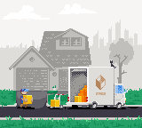

Flatpak is a next-generation technology for building and distributing desktop applications on Linux.
Flatpak changes app distribution for the better. Advantages include:
Learn how to get started in 5 minutes, learn how to distribute your app as a flatpak.
Regardless of what Linux distro you’re using, head over to Flathub and install the newest apps for Linux!
Flatpak is developed by an independent community, made up of contributors, volunteers and supporting organizations. It is a true upstream open source project, dedicated to providing technology and services that can be used by all, with no vendor lock-in. We have strong links to other Free Software projects, including the Freedesktop project.
All our code is freely available, with no contributor agreement required. Volunteers and contributing organizations are welcome, as equal partners.
| Mailing list: | flatpak@lists.freedesktop.org |
| Private mailing list for security issues: | flatpak-security@lists.freedesktop.org |
| Matrix: | #flatpak on Matrix.org |
| Twitter: | FlatpakApps |
| GitHub: | github.com/flatpak |